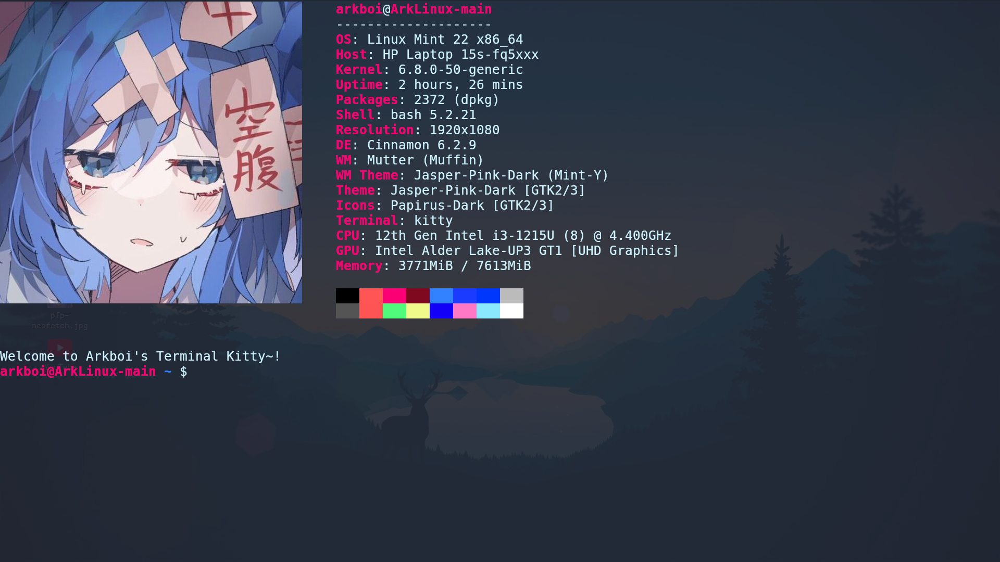

Date: 14/12/2024| The Linux Mint 22 "Wilma" experience
# Amazing!
I recently tried out Fedora KDE and I said that everything broke and i uninstalled it
in my previous article. And I also said, i'm using Linux Mint, once and for all. And I still am.
It's been a few days since i've got Linux Mint, and setting everything up, was very fun, so
the thing i'm most proud about is my terminal, kitty, and I made it look translucent, with nice
colors, launch neofetch on startup and say a message while starting up all of that stuff by customizing
kitty's configuration files and by .bashrc
So for those who don't know what a bashrc is, it's basically a file with code that will execute
everytime when you launch any bash terminal.
I also changed Neofetch's configuration to change the image that pops up when using neofetch, because
the default one is an ascii linux mint logo which I don't really like.
So, my terminal is the thing I put the most amount of time into.

Now, the anime picture is just a place holder alright, I just wanted to see how do you put an image in
neofetch like that, and i'm gonna be replacing that with something else that fits this pink theme thingy.
Now the whole reason I went with a pink theme is because my kitty terminal theme has a pink color,
so I just decided to change everything to pink.
# System Themes
So, is it just me or does the cinnamon "Mint-Y" theme look a bit outdated? Well, to me
it defenitely looked outdated so I decided to watch "Michael Horn's" video about customizing
mint, and I used the papirus icons and everything else, jasper gtk theme pink, and this miku-cursor
i found.
# That's it!
And that is my linux mint experience! It was amazing, and I will keep using it!
So, here are some quick info:
Terminal: Kitty
WM: Mutter(Muffin)
DE: Cinnamon 6.2.9
Files: Thunar
Text Editor: Micro
Theme: Jasper-Pink-Dark [GTK 2/3]
Icons: Papirus-Pink-Folders
And thanks for reading!
-arkboi